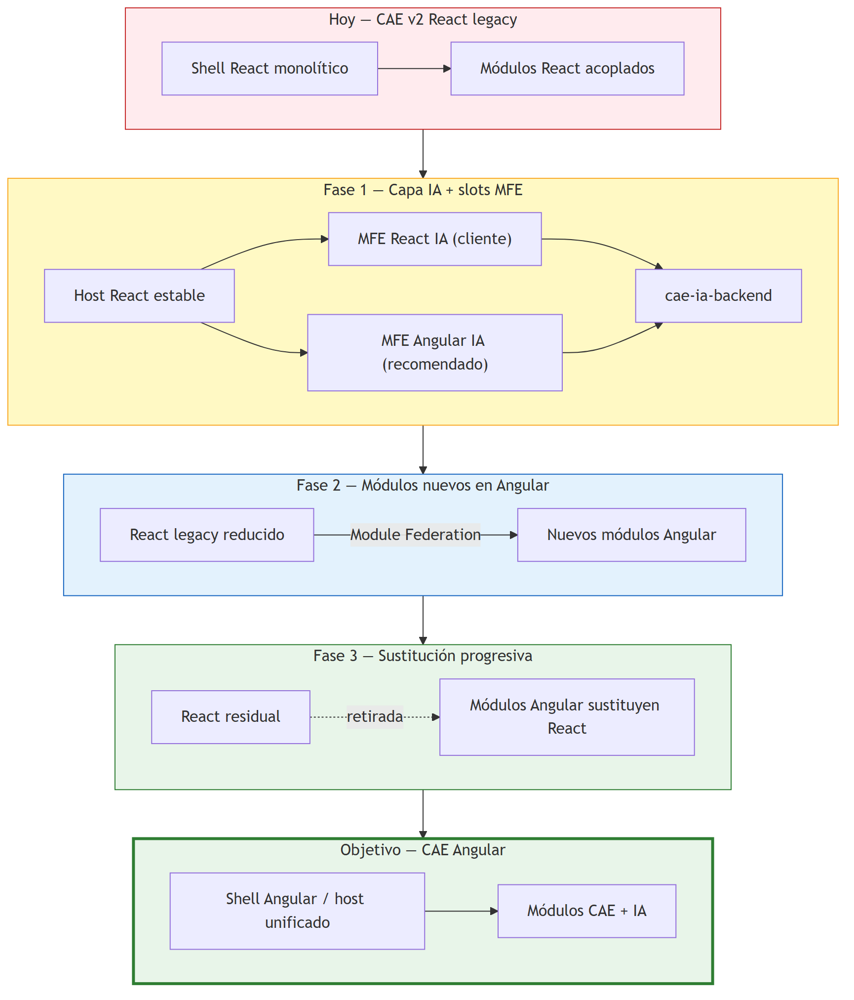
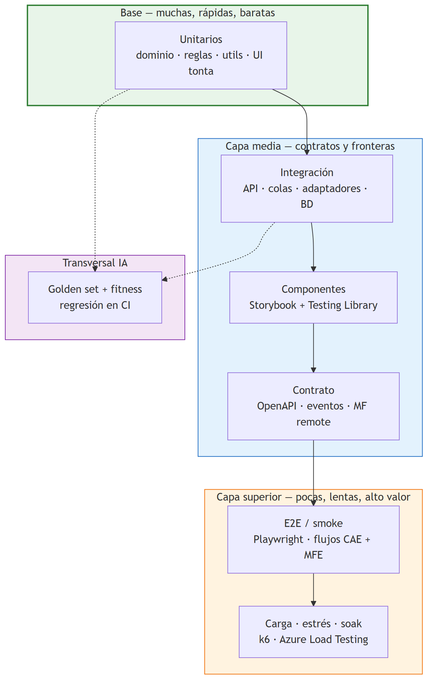

SISTEMA DE ASISTENCIA INTELIGENTE PARA PLATAFORMA CAE
Diagrama maestro de arquitectura — Visión funcional + Técnica E2E
| Campo |
Valor |
| Versión diagrama |
3.0 |
| Fecha |
03/07/2026 |
Leyenda de fases
| Color |
Fase |
Alcance |
| 🔵 Azul claro |
Ingesta |
Gateway, auth, idempotencia |
| 🔵 Azul |
Extracción |
Blob RAW, OCR, clasificación, JSON |
| 🟡 Amarillo |
Validación progresiva |
Motor CAE, cruces, completitud — NÚCLEO |
| 🟣 Púrpura |
Razonamiento IA |
Orchestrator, Foundry, RAG |
| 🔷 Azul oscuro |
Decisión |
OK / Review / Reject pre-envío |
| 🔴 Rojo |
Humano |
Operaciones, supervisor |
| 🟠 Naranja |
MLOps + Fitness |
Feedback, labeling, dataset, evaluación, fitness, promoción/rollback |
| 🟤 Beige |
Observabilidad |
Transversal — audit, tracing, KPIs |
Principios transversales: API First · Hexagonal · DDD · Libs first · Deploy elástico · Microfrontend CAE v2 · Smart/Dumb UI · Storybook · Pirámide testing · Human in the Loop · Observabilidad
0. Paradigma arquitectónico
La capa de asistencia inteligente se implementará con:
| Paradigma |
Aplicación en el proyecto |
| Arquitectura hexagonal |
Puertos y adaptadores en cada lib; dominio aislado de frameworks cloud |
| DDD |
Bounded contexts en libs/isomorphic/cae/core |
| Monorepo Nx |
libs/ reutilizables + apps/ compositores |
| Deploy elástico |
Monolito modular (apps/cae-ia-backend) → microservicios según demanda |
| UI React (decisión cliente) |
CAE v2 legacy es React; MFE vinculante en apps/cae-assistant-mfe |
| UI Angular (recom. técnica) |
Stack preferido greenfield; MFE apps/cae-assistant-mfe-angular + escenario migración CAE |
| Componentes tontos + Storybook |
libs/*/cae/ui + apps/cae-ui-storybook |
| Pirámide de testing |
Unit → integración → Storybook → E2E → carga/estrés + golden set |
| Strangler Fig (React→Angular) |
MFE como puente; Angular destino — ESTRATEGIA-MIGRACION-FRONTEND-CAE.md |
0.1 Situación actual vs objetivo
|
Plataforma CAE v2.0 (hoy) |
Capa IA CAE (objetivo) |
| Estructura |
Monolito / acoplado |
libs/ Nx independientes |
| Backend |
Core CAE propietario |
libs/node/cae/*-backend + ACL |
| Frontend host |
React (legacy, deuda técnica) |
Sin sustituir shell de inmediato; MFE React (cliente) |
| UI IA |
— |
React entrega acordada + Angular recomendado en paralelo |
| Despliegue |
Single app |
Monolito IA → microservicios opcional |
flowchart TB
subgraph WORKSPACE["Monorepo Nx — CAE IA"]
subgraph APPS["apps/"]
A2["cae-ia-backend"]
A3["cae-assistant-mfe React CLIENTE"]
A4["cae-assistant-mfe-angular RECOMENDADO"]
end
subgraph LIBS["libs/"]
ISO["isomorphic/cae"]
NODE["node/cae/*-backend"]
REACT["react/cae/*"]
ANG["angular/cae/*"]
end
end
subgraph CAE20["Plataforma CAE v2.0 — React"]
SHELL["Shell host React"]
end
A2 --> NODE
A3 --> REACT
A4 --> ANG
NODE --> ISO
REACT & ANG --> A2
SHELL -->|Module Federation| A3
SHELL -.->|alternativa| A4
NODE -->|ACL| CAE20
style A3 fill:#e3f2fd,stroke:#1565c0,stroke-width:2px
style A4 fill:#f3e5f5,stroke:#7b1fa2,stroke-dasharray:5 5
style ISO fill:#fff9c4,stroke:#f9a825
flowchart LR
subgraph MS["Microservicios CAE IA"]
GW["cae-gateway"]
ING["cae-ingestion"]
EXT["cae-extraction"]
VAL["cae-validation"]
REA["cae-reasoning"]
FB["cae-feedback"]
MLO["cae-mlops"]
INT["cae-integration"]
end
CAE["Plataforma CAE v2.0"] <-->|ACL| INT
GW --> ING & EXT & VAL & REA & FB & MLO
ING -->|eventos| EXT
EXT -->|eventos| VAL
VAL -->|eventos| REA
FB -->|eventos| MLO
MLO -.->|promoción| EXT & VAL & REA
style VAL fill:#fff9c4,stroke:#f9a825,stroke-width:2px
1. VISIÓN FUNCIONAL COMPLETA (10 fases)
flowchart LR
subgraph P1["① FRONTEND — ASISTENCIA CONTINUA"]
direction TB
P1A["Cliente crea expediente"]
P1B["Sube documentos PDF / imagen"]
P1C["Feedback inmediato IA"]
P1D["% completitud + incidencias"]
P1A --> P1B --> P1C --> P1D
end
subgraph P2["②③④ INGESTA + EXTRACCIÓN"]
direction TB
P2A["Gateway + Auth + Idempotencia"]
P2B["Blob Storage RAW inmutable"]
P2C["Preprocesado + OCR"]
P2D["Document Intelligence"]
P2E["Fallback GPT-4o Vision"]
P2F["Clasificación documental"]
P2G["Extracción estructurada"]
P2H["JSON + confidence score"]
P2A --> P2B --> P2C --> P2D
P2C --> P2E
P2D --> P2F --> P2G --> P2H
P2E --> P2F
end
subgraph P3["⑤ VALIDACIÓN PROGRESIVA CAE — CORE"]
direction TB
P3A["Validation Engine + Reglas CAE"]
P3B["Cruce semántico entre docs"]
P3C["Titular · VIN · Matrícula · Fechas · Empresa"]
P3D["Control de completitud"]
P3E{"¿Incidencias?"}
P3F["🔴 Crítica — bloquea envío"]
P3G["🟠 Mayor — advertencia + corrección"]
P3H["🟡 Menor — mejora calidad"]
P3I["Feedback cliente tiempo real"]
P3A --> P3B --> P3C --> P3D --> P3E
P3E --> P3F & P3G & P3H --> P3I
end
subgraph P4["⑥ RAZONAMIENTO IA AVANZADO"]
direction TB
P4A["AI Orchestrator"]
P4B["Azure AI Foundry"]
P4C["RAG — Knowledge Base CAE"]
P4D["Normativa · checklists · casuísticas"]
P4E["Análisis global expediente"]
P4F["Resumen ejecutivo + Risk Score"]
P4A --> P4B --> P4C --> P4D
P4B --> P4E --> P4F
end
subgraph P5["⑦ VALIDACIÓN FINAL Y DECISIÓN"]
direction TB
P5A{"Decision Engine pre-envío"}
P5B["✅ OK — listo para envío"]
P5C["🔍 Review — cola humana + resumen IA"]
P5D["❌ Reject — detalle incidencias"]
P5A --> P5B & P5C & P5D
end
subgraph P6["⑧ REVISIÓN OPERACIONES"]
direction TB
P6A["Resumen IA incidencias priorizadas"]
P6B["Supervisor CAE"]
P6C["Asistente IA Operaciones"]
P6D["Validación humana final"]
P6A --> P6B --> P6C --> P6D
end
subgraph P7["⑨ FEEDBACK + MLOps + FITNESS"]
direction TB
P7A["Feedback Engine"]
P7B["Registro correcciones + etiquetas"]
P7C["Dataset versionado + Labeling"]
P7D["Evaluation Pipeline + Golden set"]
P7E["Fitness Engine F1-F6"]
P7F["Promoción / Rollback Registry"]
P7A --> P7B --> P7C --> P7D --> P7E --> P7F
P7F -.->|Mejora| P2
end
P1 --> P2 --> P3 --> P4 --> P5 --> P6 --> P7
subgraph P8["⑩ OBSERVABILIDAD + AUDITORÍA — TRANSVERSAL"]
direction LR
P8A["Audit Log completo"] --> P8B["Trazabilidad E2E"]
P8B --> P8C["Monitorización + alertas"]
P8C --> P8D["KPIs + Dashboards"]
end
P8 -.-> P1 & P2 & P3 & P4 & P5 & P6 & P7
style P1 fill:#e3f2fd,stroke:#1565c0
style P2 fill:#bbdefb,stroke:#0d47a1
style P3 fill:#fff9c4,stroke:#f9a825,stroke-width:3px
style P4 fill:#e1bee7,stroke:#6a1b9a
style P5 fill:#b3e5fc,stroke:#0277bd
style P6 fill:#ffcdd2,stroke:#c62828
style P7 fill:#ffe0b2,stroke:#e65100
style P8 fill:#d7ccc8,stroke:#4e342e
Detalle por fase funcional
| # |
Fase |
Entrada |
Salida |
Actor principal |
| 1 |
Frontend asistido |
Acción usuario |
Upload + feedback UI |
Cliente |
| 2-4 |
Ingesta + Extracción |
Archivo binario |
JSON estructurado + confidence |
Sistema IA |
| 5 |
Validación progresiva |
JSON expediente |
Incidencias + scoring + completitud |
Sistema IA |
| 6 |
Razonamiento IA |
Expediente + incidencias |
Resumen, explicaciones, risk score |
Azure AI Foundry |
| 7 |
Decisión final |
Validación completa |
OK / Review / Reject |
Decision Engine |
| 8 |
Revisión Operaciones |
Expediente en cola |
Aprobado / Devuelto / Rechazado |
Operaciones |
| 9 |
Feedback + MLOps + Fitness |
Correcciones humanas |
Dataset, fitness, promoción modelos |
Sistema |
| 10 |
Observabilidad |
Todos los eventos |
Logs, métricas, dashboards |
Transversal |
2. ARQUITECTURA TÉCNICA — FLUJO COMPLETO E2E
flowchart TD
START(["📄 Documento CAE entrada"]) --> GW{"Gateway Validación + Auth JWT"}
GW -->|Inválido| REJ1["❌ Rechazo inmediato + UX Error"]
GW -->|Válido| BLOB["Blob Storage RAW inmutable"]
BLOB --> QSEL{"Selección cola"}
QSEL -->|Fast Path| REDIS["Redis Queue"]
QSEL -->|Reliable Path| SB["Service Bus + DLQ + Retry"]
REDIS --> ORCH["AI Orchestrator + Workflow Engine"]
SB --> ORCH
ORCH --> NORM["Normalización formato"]
NORM --> FT{"Tipo archivo"}
FT -->|HEIC/JPG/PNG| C1["Convertir → PNG"]
FT -->|PDF Imagen| C2["PDF → PNG páginas"]
FT -->|PDF Texto| C3["Detectar texto embebido"]
C1 --> PRE["Preprocesado imagen"]
C2 --> PRE
C3 --> TXTSUF{"¿Texto suficiente?"}
TXTSUF -->|Sí| PDFP["PDF Parser"]
TXTSUF -->|No| PRE
PRE --> OCR["OCR Document Intelligence"]
PDFP --> RAWTXT["Texto bruto"]
OCR --> RAWTXT
RAWTXT --> CONF{"Calidad OCR / Confidence"}
CONF -->|Alta ≥ 0.85| REL["Texto fiable"]
CONF -->|Baja < 0.85| VLM["Fallback GPT-4o Vision"]
VLM --> REL
REL --> CLASS{"Clasificador documental"}
CLASS -->|DNI/NIE| EX1["Extractor Identidad"]
CLASS -->|Factura VN| EX2["Extractor Factura"]
CLASS -->|Ficha Técnica| EX3["Extractor Ficha Técnica"]
CLASS -->|Permiso/IVTM| EX4["Extractor Permiso"]
CLASS -->|Convenio/Anexo| EX5["Extractor Convenio CAE"]
CLASS -->|Firma| EX6["Extractor Firma"]
CLASS -->|VO/VN| EX7["Extractor Vehículo"]
CLASS -->|Otros| EX8["Extractor Genérico"]
EX1 & EX2 & EX3 & EX4 & EX5 & EX6 & EX7 & EX8 --> JSON["JSON estructurado + confidence + provenance + bbox"]
JSON --> UPD["Actualizar expediente CAE"]
UPD --> MOTOR["⚙ MOTOR VALIDACIÓN PROGRESIVA CAE"]
subgraph MOTOR_DETAIL["Motor Validación Progresiva CAE"]
direction TB
M1["Reglas deterministas Bloques A–G"]
M2["Cruce semántico multi-documento"]
M3["Validación fechas · seguros · actividad"]
M4["Validación empresa-trabajador"]
M5["Validación vehículo-documentación"]
M6["Documentación obligatoria"]
M7["Global Scoring + Risk"]
M1 --> M2 --> M3 --> M4 --> M5 --> M6 --> M7
end
MOTOR --> MOTOR_DETAIL
MOTOR_DETAIL --> COMP{"¿Expediente completo?"}
COMP -->|No| LOOP["Informar incidencias → UI cliente"]
LOOP --> WAIT["Esperar nuevos documentos"]
WAIT --> UPD
COMP -->|Sí| FDR["Azure AI Foundry — Análisis global"]
FDR --> RAG["Knowledge Base CAE RAG"]
RAG --> DEC{"Decisión Final"}
DEC -->|OK| OK["✅ Listo para envío"]
DEC -->|Review| REV["🔍 Cola revisión humana + resumen IA"]
DEC -->|Reject| REJ2["❌ Rechazo automático con detalle"]
REV --> SUP["Supervisor CAE + Asistente IA"]
SUP --> HUM["Validación humana"]
HUM --> FB["Feedback Engine"]
OK --> FB
REJ2 --> FB
FB --> DS["Dataset + Labeling"]
DS --> EV["Evaluation Pipeline"]
EV --> FIT["Fitness Engine"]
FIT --> REG{"¿Supera umbrales?"}
REG -->|Sí| PROM["Promoción Registry"]
REG -->|No| REF["Refinamiento prompts / extractores / reglas"]
PROM --> IMP1["Extractores IA"]
REF --> IMP1
PROM --> IMP2["Reglas CAE"]
REF --> IMP2
PROM --> IMP3["Prompts Foundry"]
REF --> IMP3
FIT --> MET["Métricas fitness + dashboards MLOps"]
OK & REV & REJ2 --> AUDIT["Audit Log + Tracing OpenTelemetry"]
AUDIT --> PNG["Guardar PNG procesado"]
PNG --> OPT["Optimización AVIF / WebP"]
OPT --> CDN["Storage optimizado + CDN"]
CDN --> UI["Frontend Thumbnails + Auto-fill UI"]
style MOTOR fill:#fff59d,stroke:#f57f17,stroke-width:3px
style MOTOR_DETAIL fill:#fff9c4,stroke:#f9a825
style FDR fill:#e1bee7,stroke:#6a1b9a
style DEC fill:#b3e5fc,stroke:#0277bd
style SUP fill:#ffcdd2,stroke:#c62828
style FB fill:#ffe0b2,stroke:#e65100
style AUDIT fill:#d7ccc8,stroke:#4e342e
3. MOTOR VALIDACIÓN PROGRESIVA CAE (detalle)
flowchart TB
IN["Unified Expedition JSON"] --> BLK_A["Bloque A — Validaciones documentales"]
BLK_A --> BLK_B["Bloque B — Firmas"]
BLK_B --> BLK_C["Bloque C — Coherencia cruzada"]
BLK_C --> BLK_D["Bloque D — Reglas CAE"]
BLK_D --> BLK_E["Bloque E — Formulario"]
BLK_E --> BLK_F["Bloque F — Anexos"]
BLK_F --> BLK_G["Bloque G — Calidad documental"]
BLK_C --> CROSS["Cruce semántico"]
CROSS --> C1["Titular"]
CROSS --> C2["VIN"]
CROSS --> C3["Matrícula"]
CROSS --> C4["Marca / Modelo"]
CROSS --> C5["Fechas actuación"]
CROSS --> C6["Empresa / Concesionario"]
BLK_G --> COMP["Control completitud"]
COMP --> SCORE["Scoring Engine"]
SCORE --> S1["Completitud %"]
SCORE --> S2["Confianza media"]
SCORE --> S3["Risk Score"]
SCORE --> S4["First Time Right indicator"]
S1 & S2 & S3 & S4 --> INC{"Clasificar incidencias"}
INC --> I1["Crítica → bloquea envío"]
INC --> I2["Mayor → bloquea envío"]
INC --> I3["Menor → advertencia"]
INC --> I4["Informativa → sugerencia"]
I1 & I2 & I3 & I4 --> OUT["Estado expediente + UI feedback"]
style BLK_D fill:#fff9c4,stroke:#f9a825
style CROSS fill:#fff59d,stroke:#f57f17
style SCORE fill:#fff9c4,stroke:#f9a825
4. Bucle MLOps, Fitness y Feedback
flowchart LR
H1["Corrección Operaciones"] --> FE["Feedback Engine"]
H2["Corrección Cliente"] --> FE
H3["Falso positivo/negativo"] --> FE
FE --> LOG["Log estructurado + etiqueta sugerida"]
LOG --> LB["Labeling asistido"]
LB --> DS["Dataset versionado"]
DS --> EV["Evaluation Pipeline"]
EV --> GS["Golden set >= 200 casos"]
GS --> FIT["Fitness Engine"]
FIT --> C1["F1 Clasificacion 15%"]
FIT --> C2["F2 Extraccion 25%"]
FIT --> C3["F3 Validacion 25%"]
FIT --> C4["F4 FTR 15%"]
FIT --> C5["F5 Latencia 10%"]
FIT --> C6["F6 Coste 10%"]
C1 & C2 & C3 & C4 & C5 & C6 --> FG["Fitness Global 0-100"]
FG --> DEC{"Promovible?"}
DEC -->|Si| DEP["Promocion Registry"]
DEC -->|No| REF["Refinamiento"]
DEP --> R1["Extractores"]
DEP --> R2["Reglas CAE"]
DEP --> R3["Prompts Foundry"]
REF --> EV
DEP --> RB["Rollback < 15 min si regresion"]
style FE fill:#ffe0b2,stroke:#e65100
style FIT fill:#ffcc80,stroke:#ef6c00,stroke-width:2px
Modelo de fitness (resumen técnico)
| Componente |
Peso |
Fuente |
| F₁ Clasificación |
15% |
F1-score clasificador documental |
| F₂ Extracción |
25% |
Exactitud campos clave (golden set) |
| F₃ Validación |
25% |
Recall + precisión incidencias |
| F₄ FTR |
15% |
First Time Right producción |
| F₅ Latencia |
10% |
P95 análisis documento |
| F₆ Coste |
10% |
Coste medio por expediente |
Promoción: fitness candidato ≥ activo + 1; regresión F₂/F₃ ≤ 1 pt; recall críticas ≥ 98%.
Rollback: si fitness producción cae > 2% respecto versión activa.
5. Capa de observabilidad transversal
flowchart LR
subgraph SOURCES["Fuentes de telemetría"]
S1["Gateway"]
S2["Orchestrator"]
S3["OCR / Vision"]
S4["Validation Engine"]
S5["Foundry / RAG"]
S6["Feedback"]
end
subgraph OBS["Observabilidad"]
OT["OpenTelemetry Collector"]
AL["Audit Log append-only"]
LA["Log Analytics"]
AI["Application Insights"]
DB["Dashboards KPI"]
end
S1 & S2 & S3 & S4 & S5 & S6 --> OT
OT --> AL & LA & AI --> DB
style OBS fill:#d7ccc8,stroke:#4e342e
Métricas monitorizadas
| Categoría |
Métricas |
| Latencia |
OCR, Vision fallback, reglas, Foundry, E2E documento, E2E expediente |
| Coste |
Por documento, por expediente, por llamada Foundry |
| Calidad |
Precisión clasificación, extracción, recall incidencias, fitness global |
| Negocio |
FTR, incidencias pre-envío, devoluciones, tiempo revisión |
| Infra |
DLQ depth, error rate, disponibilidad |
6. Mapa fase funcional ↔ componente técnico
| Fase funcional |
Componentes técnicos |
| ① Frontend |
UI CAE, WebSocket/SSE, panel incidencias, auto-fill |
| ② Gateway |
Edge Gateway, JWT Entra ID, idempotency Redis |
| ③ Blob RAW |
Azure Blob Storage, hash SHA-256, WORM |
| ④ Extracción |
Preprocessing, Document Intelligence, GPT-4o Vision, Classifier, Workers |
| ⑤ Validación progresiva |
Validation Engine, reglas A–G, cruces, scoring |
| ⑥ Razonamiento IA |
AI Orchestrator, Azure AI Foundry, AI Search RAG |
| ⑦ Decisión |
Decision Engine |
| ⑧ Operaciones |
Cola revisión, resumen IA, UI supervisor |
| ⑨ MLOps + Fitness |
Feedback Engine, Labeling, Dataset, Evaluation, Fitness Engine, Registry |
| ⑩ Observabilidad |
OpenTelemetry, Audit Log, dashboards |
| Implementación |
Monorepo Nx: libs/isomorphic/cae, libs/node/cae, libs/react/cae (+ libs/angular/cae recom.), apps/cae-ia-backend, MFE React (decisión cliente) |
7. Mapa objetivo monorepo Nx
| Capa |
Ruta objetivo |
Rol |
| Dominio DDD |
libs/isomorphic/cae/core |
Agregados, reglas RF, eventos |
| Contratos |
libs/isomorphic/cae/api |
OpenAPI, DTOs |
| Backend IA |
libs/node/cae/*-backend |
NestJS modules hexagonales |
| UI React (decisión cliente) |
libs/react/cae/feature-* |
MFE integrado en host CAE v2 legacy |
| UI Angular (recom. técnica) |
libs/angular/cae/feature-* |
Stack preferido; POC migración CAE |
| Host backend |
apps/cae-ia-backend |
Monolito modular IA (Modo A) |
| MFE React (decisión cliente) |
apps/cae-assistant-mfe |
Remote → shell CAE v2 (alcance acordado) |
| MFE Angular (recom. técnica) |
apps/cae-assistant-mfe-angular |
Remote alternativo; modernización futura |
| Modo despliegue |
Composición |
Cuándo |
| A — Monolito modular |
Solo cae-ia-backend |
MVP, integración CAE, baja carga |
| B — Híbrido |
Monolito + 1–2 servicios |
Picos aislados (p. ej. MLOps) |
| C — Microservicios |
Un apps/cae-*-service por lib backend |
Alta escala |
7.1 Integración UI: React (cliente) vs Angular (recomendado)
CAE v2 legacy está en React (decisión histórica del producto/cliente). Angular es la recomendación técnica para capa nueva y eventual modernización del frontend CAE.
flowchart LR
subgraph HOST["CAE v2 Host React legacy"]
SLOT["Slots UI"]
end
subgraph REACT_MFE["VINCULANTE — React MFE (cliente)"]
R["libs/react/cae"]
APP_R["cae-assistant-mfe"]
R --> APP_R
end
subgraph NG_MFE["RECOMENDADO — Angular MFE"]
A["libs/angular/cae"]
APP_A["cae-assistant-mfe-angular"]
A --> APP_A
end
SLOT -->|Module Federation| APP_R
SLOT -.->|POC / futuro| APP_A
APP_R & APP_A --> API["cae-ia-backend"]
style REACT_MFE fill:#e3f2fd,stroke:#1565c0
style NG_MFE fill:#e8f5e9,stroke:#2e7d32,stroke-width:2px
7.2 Escenario evolutivo — Strangler Fig
Patrón Strangler Fig (estrangular el legacy): el host React se reduce módulo a módulo mientras Angular crece como remotes embebidos hasta sustituir el shell.

Documento completo: ESTRATEGIA-MIGRACION-FRONTEND-CAE.md
| Fase |
CAE legacy (React) |
CAE nuevo (Angular) |
| 0 — Baseline |
100 % plataforma |
Auditoría módulos y deuda |
| 1 — IA integrada |
Host estable; MFE React (cliente) + Angular POC |
Capa asistencia IA |
| 2 — Nuevos módulos |
Sin features grandes nuevas en React |
Todo greenfield en Angular |
| 3 — Sustitución |
Retirada módulo a módulo |
Reescrituras priorizadas por ROI |
| 4 — Consolidación |
Shell React desaparece |
CAE unificado en Angular |
8. Calidad: pirámide de testing y frontend reusable
8.1 Pirámide de testing

| Capa |
Qué valida |
Cuándo |
| Unitarios |
Dominio CAE, reglas RF, utils, componentes tontos |
Cada PR |
| Integración |
NestJS modules, adaptadores, colas, BD |
Cada PR |
| Contrato |
OpenAPI, eventos, Module Federation remote |
PR + nightly |
| Storybook |
Componentes ui/ — estados, a11y, interacción |
PR (frontend) |
| E2E |
Flujos expediente + MFE en CAE v2 |
Nightly / STAGING |
| Carga / estrés / soak |
SLO latencia y throughput bajo pico |
Pre-release / mensual |
| Golden set + fitness |
Regresión IA |
Gate promoción |
8.2 Frontend: listos vs tontos + Storybook
flowchart LR
subgraph FEAT["feature-* LISTOS"]
AP["AssistantPanel"]
IS["IncidentsSidebar"]
end
subgraph UI["ui/ TONTOS"]
IC["IncidentCard"]
CG["CompletenessGauge"]
end
subgraph SB["Storybook"]
ST["*.stories"]
end
AP --> IC & CG
IS --> IC
IC & CG --> ST
FEAT --> API["cae-ia-backend"]
style UI fill:#e8f5e9,stroke:#2e7d32
style FEAT fill:#e3f2fd,stroke:#1565c0
style SB fill:#fff9c4,stroke:#f9a825
| Tipo |
Rol |
Storybook |
Tonto (ui/) |
Solo props + eventos; reusable |
Obligatorio |
Listo (feature-*) |
Datos, SSE, composición |
Opcional (E2E) |
Exportar diagramas
- Abrir mermaid.live
- Pegar el bloque Mermaid deseado
- Exportar PNG o SVG
- Usar en presentaciones o anexar a los PDFs de especificación
Diagrama maestro v3.0 — Sistema de Asistencia Inteligente CAE.